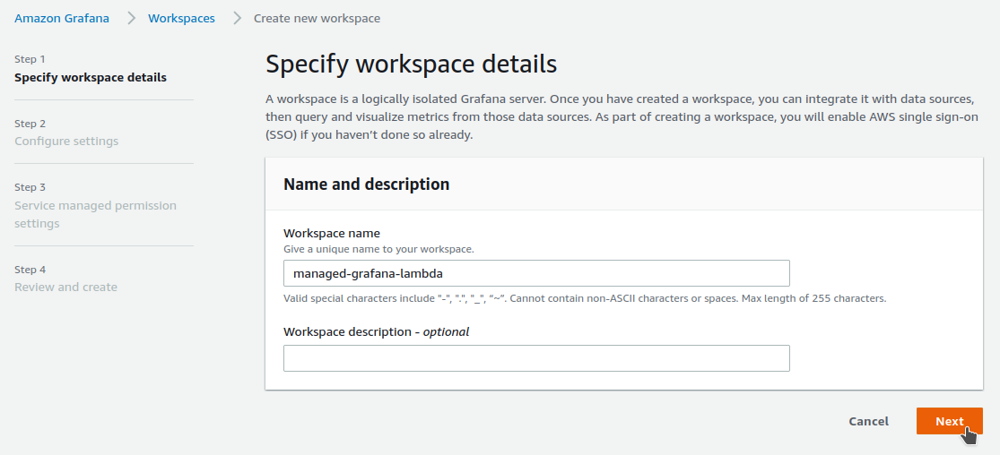
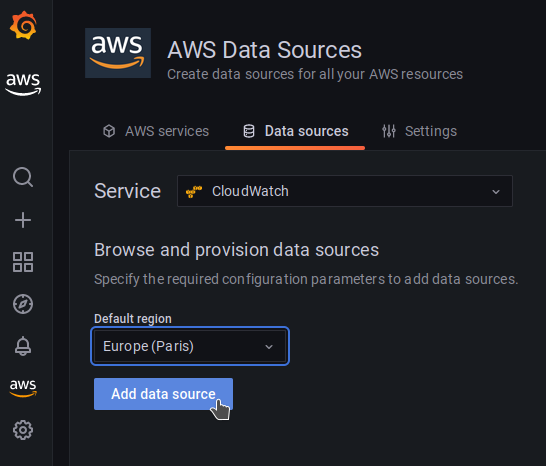

AWS Grafana + Lambda + Terraform
- Create an API Gateway and a Lambda function with Terraform
- Setup a Managed Grafana workspace
- Configure AWS Single Sign-On
- Import and setup 2 Grafana dashboards
- Use curl to test the dashboards
Install and setup the project
Get the code from this github repository :
# download the code
$ git clone \
--depth 1 \
https://github.com/jeromedecoster/managed-grafana-lambda.git \
/tmp/aws
# cd
$ cd /tmp/aws
To setup the project, run the following command :
# terraform setup
$ make setup
This command will :
- Initialize Terraform
We can validate HCL files with this command :
# terraform validation
$ make validate
We are now deploying our application :
# terraform plan + apply (deploy)
$ make apply
We can see that our Lambda function is ready :
A little test to see if it works. Everything is fine because some JSON data is returned :
$ make curl-get
{
"method": "GET",
"path": "/"
}
Creation of the Grafana workspace
We will create a Grafana workspace from the web interface
My default region eu-west-3 Paris is not yet available, so I choose eu-west-2 London :
I give the name of our project. But before validating with the Next button, I must activate AWS Single Sign-On :

To be able to continue I must make sure that AWS Single Sign-On is enabled :
In another tab of my browser I connect via the web interface :
I make sure I am in the same eu-west-2 London region as my Grafana workspace :
I clicked on Enable, I wait a few seconds :
Activation completed successfully :
Without closing my SSO browser tab, I go back to the one open on Managed Grafana.
I now validate the creation of my workspace by clicking Next :
Everything works, I continue :
I choose to collect my data via X-Ray and CloudWatch :
I have a summary before launching the creation :
Creation takes a few seconds :
If I want to add a user to my workspace :
I currently have no user available.
I must first create and validate one from the AWS Single Sign-On interface :
I now return to my SSO browser tab. I will create a user :
I fill in the requested data :
I ignore the group creation step :
The user is created. A validation email has been sent :
I click the link received in the validation email :
I activate this user by setting a password :
I am redirected to the application activation page :

I can now select a user to associate it with my Grafana workspace :
The user is associated as Viewer :
I select the user to pass it as Admin :
It is done :
I can now open my workspace by clicking on its URL :
Setup Grafana data source
We will add the CloudWatch logs as data source :
It’s extremely simple :

Configuration of a CloudWatch dashboard
We will add a first dashboard dedicated to CloudWatch logs :
We select Manage :
We click on the Import button :
We set the dashboard id and click on the Load button :
I rename the dashboard by adding its identifier.
I select my data source :
We can finish the import :
Here are the log groups generated by our application :
I copy and paste the path of the log group in the interface :
I edit the Logs panel :
I indicate the path of the log group :
I modify the filter and I refresh the interface.
The log generated by my previous call is now displayed :
Coming back to the interface, I see the activity going up.
The 4 events indicated correspond to 4 log lines.
It is in fact 1 event but which breaks down into 4 lines : START, INFO, END and REPORT.
We invoke the function by generating a voluntary error :
# post /api/deplay 10 ~ 29 seconds
$ make curl-error
This command runs a script that will run the Lambda asking it to wait 25 seconds.
Here is a snippet of asynchronous Lambda code with a setTimeout function :
async function timeout(success, time) {
return new Promise(function(resolve, reject) {
setTimeout(function() {
if (success === false) resolve(buildResponse(400, `error ${success} ${time}`))
else resolve(buildResponse(200, `ok ${success} ${time}`))
}, time)
})
}
Our Lambda has the default timeout of 3 sec. Our invocation will therefore generate a timeout error :
I can save my dashboard :
I memorize some parameters :
Configuration of a Lambda dashboard
We will add a second dashboard dedicated to Lambda events :
We indicate the dashboard id and click on the Load button :
We can finish the import :
I select the parameters to target my Lambda function :

We now invoke the function with an immediate result :
# get /
$ make curl-get
This is a success :
We now invoke the function with a random result :
50 %chance of being successful after 1 or 2 seconds50 %chance of being a failure via a timeout
# post /api/deplay 1 ~ 4 seconds (lambda timeout after 3 seconds)
$ make curl-rand-success
As we can see below, our call lasted 3 seconds or more, the lambda timeout generated an error :
The demonstration is over. We can delete our resources with this command :
# destroy all resources
$ make destroy